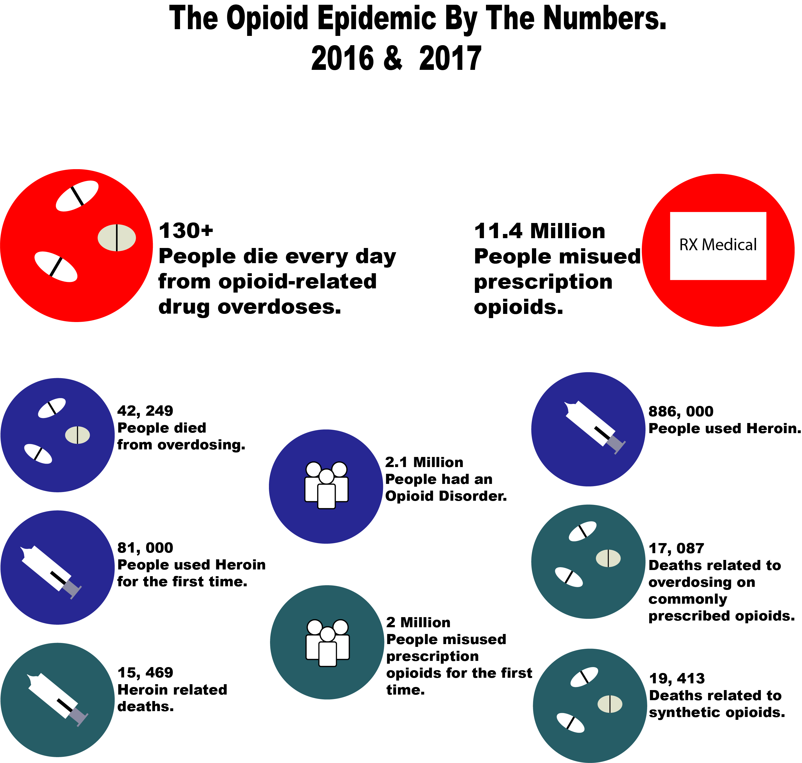

Let's start with what are Opioids? An Opioid is a term for certain drugs that work on the bodys opioids receptor. Now the kind of drugs that are used for opioids include such as: heroin, fentanyl, to prescribed drugs such as; hydrocodone(Vicodin), oxycodone(Oxycotin), codeine, morphine and much more. This makes it hard because while most of these substances can be categorized as illegal some are also legal and can be picked up with a prescription from the pharmacy.
This chart below shows some statistics from the year 2016 & 2017 of opioid usage.

Now there will never be a stop to these drugs and pain killers for various reasons, but what should be brought to attention is how people get ahold of them. The only legal way to get pain killers is from a prescription from your doctor. Now as for the people that don't have a prescription, well, they get them second-handed.
Which brings me to my next point. However the dealer comes in contac with the pills, no one knows. They can either have a prescription themselves or usually they have a pill press.
A pill press, or tablet press, is known as a mechanical deivce that compresses powder that's put into it and out comes a pill like item. From the color, to the shape and lettering on the pill this device can make you think you have the real thing. The scary thing is that most if not all people using these press machines don't know exactly what they're cutting (adding a cheaper substance to your drug to make your quanity last longer). A common substance used when cutting is Fentanyl, this is because: it is easily obtainable online, inexpensive and very addictive, on top of that it also has the same effects on your bodys receptors. However this is also a very deadly drug if too high of a dosage is consumed.
A lot of these dealers don't know what they're selling, they don't know how much it takes for one person to die. They just care about their money and how could they make more of it.